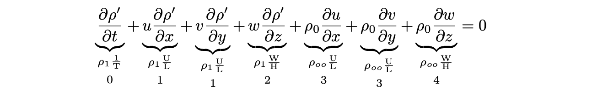

\(\newcommand{\pfrac}[2]{\frac{\partial #1}{\partial #2}}\)
\(\newcommand{\sW}{\mathrm{W}}\) \(\newcommand{\sH}{\mathrm{H}}\) \(\newcommand{\sU}{\mathrm{U}}\) \(\newcommand{\sL}{\mathrm{L}}\) \(\newcommand{\sT}{\mathrm{T}}\)
Main points:
Conservation of potential vorticity. Potential vorticity is a conserved quantity in the ocean and can be used to diagnose the ocean circulation.
Large scale southward circulation (in the gyres) results from latitudinal variations in Ekman transport. This is called Sverdrup balance.*
Vorticity and Sverdrup balance#
Conservation of potential vorticity#
Here, we’ll consider one of the implications of potential vorticity conservation on the large scale ocean circulation. Potential vorticity \(\boxed{q=\frac{(f+\zeta)}{H}}\tag{potential vorticity}\)
is a conserved quantity in the ocean, where \(f\) is Coriolis, \(\zeta=\partial v/\partial x-\partial u/\partial y\) is the vertical component of relative vorticity (spinniness of the fluid) of a partcel of water. Conservation of a quantity means that it does not change in time, so
There are three parts of this equation:
vorticity due to fluid circulation, \(\zeta\)
vorticity due to Earth’s rotation, \(f\), which depends on latitude when considering a local vertical column
Stretching (\(1/H\)) due to a fluid column stretching or shrinking.
Conservation of vorticity means that if one component changes in the numerator (e.g., \(f\) increases or \(\zeta\) increases) then the denominator must also change to keep the ratio constant (e.g., \(H\) thickness must increase).
This is analogous to the conservation of angular momentum for solid body physics, but applied to a fluid parcel. If you recall the example of an ice skater spinning, when he/she pulls in his/her arms (gets narrower/taller), the angular velocity increases.
Ekman pumping and suction#
Variations in the stress on a surface lead to horizontal convergences and divergences of the Ekman transport, which is compensated for, by a vertical velocity divergence (i.e., stretching or shrinking). This process is called Ekman pumping.
Deriving the continuity equation#
Starting with the equation for conservation of mass - that mass cannot be created or destroyed
Using scaling analysis, the assumption of a Boussinesq fluid (\(\rho=\rho_0+\rho'(x,y,z,t)\) where \(\rho'\ll\rho_0\)), and the advective timescale assumption
We start with the equation for conservation of mass,
Multiplying through by \(\rho\) and expanding the divergence (\(\nabla\cdot\)), we get
Expanding the material derivative \(D/Dt\), and distributing the \(\rho\) gives us
Because we have that \(\rho(x,y,z,t)=\rho_0+\rho'(x,y,z,t)\) (that variations in density are small relative to the magnitude of the density value), we can substitute it into the equation everywhere and drop small terms. Since \(\rho_0\) is a constant, we can drop it anywhere it appears inside a derivative (e.g., in all the terms in \(D\rho/Dt\)). This is because the derivative of a constant is identically (exactly) zero.
For example, for the \(\partial/\partial t\) term,
Then our equation becomes
Now, in the latter three terms (originating from the \(\rho \nabla\cdot\vec{u}\)), we are multiplying by \(\rho_0+\rho'\). However, we have defined the density decomposition such that \(\rho_0\gg\rho'\). Then in each of these terms, we can drop the part multiplied by \(\rho'\) as
since anything multiplied by \(\rho'\) is much smaller than the same thing multiplied by \(\rho_0\). Cancelling out the terms which are multiplied by \(\rho'\), we are left with

We will apply an assumption called the advective timescale assumption to give us that the scale of the \(\partial\rho/\partial t\) term is the same as the \(u\partial\rho/\partial x\). This assumption says that the timescale \(\sT\) associated with the \(\partial/\partial t\) in the equation is set by the speed \(\sU\) and distance \(\sL\) under consideration. Since rate times time equals distance, then
Applying this to our equation, this shows us that term 0 has the same scale as term 1. Then comparing terms 1 and 3, and 2 and 4, we find that \(1\ll3\) and \(2\ll4\) since \(\rho_1\ll\rho_{oo}\).
So we are left with retaining terms 3 and 4 which gives us the “incompressibility” equation (also called the nondivergence equation)
Using continuity to describe Ekman pumping#
If we start from the continuity equation, but only consider velocities generated by Ekman processes \(u_e\), \(v_e\) we have
We can integrate the equation with respect to \(z\) (i.e., integrate in the vertical),
Taking the integrals inside the derivatives,
Recall from the lecture on Ekman transport, that we defined variables
where \(U_e\) and \(V_e\) were Ekman transport in units of m\(^2\)/s (rather than the standard units for transport of m\(^3\)/s). Then we can replace these in our equation and get
Integrating the continuity equation with respect to \(z\), we have
We will assume that \(w\) is zero at the sea surface (or at least very small). We then define \(w_e\) as the vertical velocity at the base of the surface Ekman layer (i.e., where \(z=-\delta\)), so \(w(z=-\delta)=w_e\). Then we can compute the value of this vertical velocity due to the horizontal convergence or divergence resulting from surface Ekman transport in the \(x-\) and \(y-\) directions:
Then replacing the \(U_e\) and \(V_e\) with the expressions based on stress by wind at the sea surface, we have
When the latitudinal gradients in Ekman transport (latitudinal gradients are the \(\pfrac{}{y}\) ones) are such that water is “piled up” (i.e. a convergence), then Ekman pumping is downwards \(w_e<0\). This is the “pumping” direction. Alternatively, if the water is pulled away (i.e., a divergence), then Ekman pumping is upwards to “fill the gap” left by waters being moved out of a region, and \(w_e>0\) upwards. This is called “Ekman suction”. If signs are not known, and we are generally referring to the phenomenon, then we use “Ekman pumping”.
The figure on the left is Ekman suction - on the right is Ekman pumping.
Sverdrup relation#
What is the effect of the Ekman pumping/suction on vorticity and large scale transports?
In particular, we will consider the third part of the vorticity equation (stretching). In this case, we are going to return to our geostrophic equations with variable (Boussinesq) density and without making the \(f\)-plane approximation (so \(f\) is not a constant but changes as a function of latitude).
Beta-plane approximation: For the Sverdrup relation, we will simplify the variation of \(f\) with latitude by using instead the \(\beta\)-plane approximation. The \(\beta\)-plane approximation comes from the Taylor expansion of the sine in the equation for Coriolis, i.e. \(f=2\Omega\sin(\phi)\). \(f\)-plane retains only the first (constant) term in the expansion, while the \(\beta\)-plane means also retaining the second term in the expansion. Not shown here, but the result is:
where \(f_0=2\Omega\sin\psi\) and \(\beta_0 = 2(\Omega/a)\cos\psi\) where \(a\) is the radius of the earth, and \(\psi\) is the reference latitude. Note that \(\partial f/\partial y \approx \beta_0\). Often, the subscripts \(0\) for \(f\) and \(\beta\) will be dropped.
So, we start with our simplified equations of motion using geostrophic balance for the horizontal momentum equations,
and use hydrostatic approximation in the vertical,
and the incompressibility form of the continuity equation,
The first step is to eliminate pressure from the momentum equations.
From examining the horizontal momentum equations, this can be accomplished by calculating the curl (\(\nabla\times\)) of the horizontal momentum equations,
This gives
where, as intended, the pressure terms are cancelled on the right hand side:
Using the \(\beta\)-plane approximation, \(f\) varies with \(y\) but is not a function of \(x\). We can then apply the chain rule for derivatives, and then we have
Recalling that \(\pfrac{f}{y}=\beta_0\), and rearranging the terms, we come to
Note that we don’t replace the \(f\)’s above by \(f_0\), but instead retain the full \(f\).
Then, noting from the continuity equation that
we can replace the quantity in the brackets to give,
or, rearranging,
What is this telling us? This says that as a column of water is stretching or squeezing (\(\partial w/\partial z\)), it needs to move meridionally (through a gradient in \(f\) to account for the change in height or thickness. This is an application of the conservation of potential vorticity.
Sverdrup transport#
We can see the effects more clearly by integrating in the vertical, between a depth near the surface (\(-\delta\), we’ll see why in a minute) and the bottom of the ocean, \(-h\),
where we have assumed there is no vertical flow at the bottom of the ocean (called the “no normal flow” condition, i.e. that there is no flow normal (perpendicular) to the sea floor).
So, what is this saying?
It says that for the column of water between \(-\delta\) and the bottom, if there is a vertical velocity at \(-d\), pressing the layer downwards, then it is squashing the layer of water beneath it. So this layer is getting shorter (\(H\) in the potential vorticity equation is decreasing). According to conservation of potential vorticity, either \(f\) must decrease, or \(\zeta\) must decrease (get more negative). In this case, there is no relative vorticity (\(\zeta=0\)), so the column of water must adjust its planetary vorticity to reach a correct \(f\) and conserve potential vorticity.
Now, why was it convenient to use \(-\delta\)? Because we had an expression for vertical velocity at a depth of \(-\delta\), where \(\delta\) was the thickness of the Ekman layer. This is related to the curl of the wind stress as,
Then our equation above becomes,
We can illustrate this with a few examples/practice problem.
This tells us about the meridional transport in the layer beneath the Ekman layer, but we already know about meridional transport in the Ekman layer due to the zonal wind stress. Total Sverdrup balance is the sum of geostrophic Sverdrup balance and Ekman transport.
This was
Then we can write the total meridional transport as
The last line can be seen by noting that
since
Similarly, we should also have
since \(f\) doesn’t depend on \(x\).
Then returning to where we left off,
leaving us with Sverdrup balance (where \(V_{total}\) comprises both geostrophic transport and the surface Ekman transport),
In-class problems#
Sverdrup transport. Suppose the Ekman transport at \(30^\circ\)N in the Atlantic is -2 Sv (southward) and the Ekman transport at \(20^\circ\)N is -5 Sv (southward). Assume the Atlantic is 5000 km wide.
(a) What is the average vertical velocity at the base of the Ekman layers between \(20^\circ\)N and \(30^\circ\)N?
Answer: \(5.4\times 10^{-7}\) m/s
(b) Using the vertical velocity calculated above, calculate the southward Sverdrup interior transport. Use a value for \(\beta\) estimated at the mid-point (\(25^\circ\)N).
Answer: 8 Sv